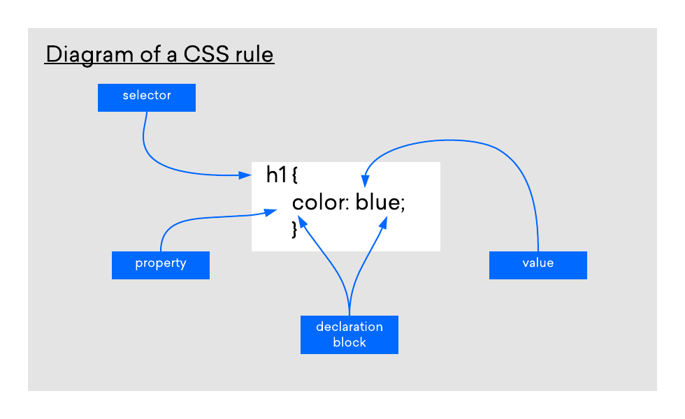

Module-2 (CSS and CSS3)
Assignment
Q1:-What are the benefits of using CSS?
Ans:-CSS is used to define styles for your web pages, including the design, layout and variations in display for different devices and screen sizes.
(1) Faster Page Speed:-
More code means slower page speed. And CSS enables you to use less code.
CSS allows you to use one CSS rule and apply it to all occurrences of a certain tag within an HTML document.
(2) Better User Experience:-
CSS not only makes web pages easy on the eye, it also allows for user-friendly formatting.
When buttons and text are in logical places and well organized, user experience improves.
(3) Easy Formatting Changes:-
You can change font style, color, size.etc.
You can change border style, size, etc.
EX:-
<p>This is paragraph.</p>
Q2:-What are the disadvantages of CSS?
Ans:- -Cross-browser issues
Different browsers work differently.So, you have to check that changes implemented in the website via CSS code.
-Extra work for developer
-Security issues
Security is important in todays world driven by technology and data.
-confusion due to many CSS levels
They might get confused while opting to learn CSS as there are many levels of CSS such as CSS2, CSS3, etc.
Q3:-What is the difference between CSS2 and CSS3?
Ans:-The biggest difference between CSS2 and CSS3 is that CSS3 is now split into different modules.
difference:
CSS2:-It had many new features such as absolute, relative and fixed positioning of elements.
It supported different media types. It also included new font properties such as shadow.
CSS3:-Different modules now go through different stages of the recommendation process.
CSS3 has support for almost all recent web browsers.
It has even included new selectors along with new combinator and new pseudo-elements.
CSS3 has several new CSS properties. It supports animation which is not a part of earlier CSS.
Q4:-Name a few CSS style components
Ans:-1. Box Model
2. Selectors
3. Text effects
4. Backgrounds and Borders
5. Animations
6. 2D/3D Transformations
Q5:-What do you understand by CSS opacity?
Ans:-The opacity property sets the opacity level for an element.
The opacity-level describes the transparency-level, where 1 is not transparent at all, 0.5 is 50% see-through,
and 0 is completely transparent.
EX:-
normal image

opacity image
Q6:-How can the background color of an element be changed?
Ans:-The background-color property sets the background color of an element.
EX:-
<background-color:color-name;>
Q7:-How can image repetition of the backup be controlled?
Ans:-When an image is repeating in the background, using the no-repeat value will prevent the image from repeating.
Ex:-
Background image:-
Background image no-repeat:-
<background-repeat: no-repeat;>
Q8:-What is the use of the background-position property?
Ans:-The background-position property sets the starting position of a background image.
By default, a background-image is placed at the top-left corner of an element, and repeated both vertically and horizontally.
Ex:-
<Background-image:Right>
Q9:-Which property controls the image scroll in the background?
Ans:-scroll:- The background image will scroll with the page. This is default.
local:- The background image will scroll with the element's contents.
Ex:-
<background-attachment : scroll>
Q10:-Why should background and color be used as separate properties?
Ans:-Background and color should be used as separate properties in HTML because they refer to different aspects of the
appearance of an element.
The color property refers to the color of the text content within an element, while the background-color property refers to the color
of the background behind the text. Using separate properties allows you to define different colors for the text and background,
which can improve the readability and aesthetics of your web page.
Ex:-
<background-color:black>
<text-color:white>
Q11:-How to center block elements using CSS1?
Ans:- By setting the properties margin-left and margin-right to auto and width to some explicit value
Ex:-
BODY {width: 30em; background: cyan;}
P {width: 22em; margin-left: auto; margin-right: auto}
Q12:-How to maintain the CSS specifications?
Ans:-The CSS specifications are maintained by the World Wide Web Consortium (W3C).
-The syntax and data types of the language
-Detailed explanation on CSS Selectors
-How you can assign values to properties
-The Cascade (the "C" in CSS)
-How inheritance works
-The Box Model e.t.c
Q13:-What are the ways to integrate CSS as a web page?
Ans:-3 ways to integrate CSS as a web page.
1:-inline CSS
-You can apply styles directly to individual HTML elements using the style attribute.
2:-internal CSS
-You can add styles within the head section of your HTML document using the style tag.
3:-external CSS
-You can create a separate .css file that contains all your styles and link it to your HTML document using the tag.
Ex:-
Inline CSS
Internal CSS
External CSS
Q14:-What is embedded style sheets?
Ans:-Place your CSS rules into an HTML document using the <style> element that is called embedded CSS.
This tag is placed inside <head>... </head> tags.
Ex:-
<font-family:verdana;>
<font-style: italic;>
Q15:-What are the external style sheets?
Ans:-An external style sheet is a separate CSS file that can be accessed by creating a link within the head section of the webpage.
Multiple webpages can use the same link to access the stylesheet. The link to an external style sheet is placed within the head
section of the page.
EX:-
External Style Sheet
<background-color:burlywood>
Q16:-What are the advantages and disadvantages of using external style sheets?
Ans:-Advantages:-
- Using them, the styles of multiple documents can be controlled from one file.
- Classes can be created for use on multiple HTML element types in many documents.
- In complex situations, selector and grouping methods can be used to apply styles.
Disadvantages:-
-Is more files to keep track of.
-Your pages may not be rendered correctly until the external CSS is loaded.
Uploading or linking to multiple CSS files can increase your site's download time.
Q17:-What is the meaning of the CSS selector?
Ans:-CSS selectors are used to "find" (or select) the HTML elements you want to style.
We can divide CSS selectors into five categories:
Simple selectors:-
-select elements based on name, id, class.
combinator selectors:-
-select elements based on a specific relationship between them.
Pseudo-class selectors:-
-select elements based on a certain state.
Pseudo-elements selectors:-
-select and style a part of an element.
Attribute selectors:-
-select elements based on an attribute or attribute value.
EX:-
Simple selectors
<text-align:center>
<color:blue>
class selectores
Q18:-What are the media types allowed by CSS?
Ans:-all:-
-Used for all media type devices.
print:-
-Used for printers.
screen:-
-Used for computer screens, tablets, smart-phones etc.
speech:-
-Used for screenreaders that "reads" the page out loud.
Ex:-
<link rel="stylesheet" media="all" href="styles.css">
@media all{}
<link rel="stylesheet" media="print" href="print.css">
@media print{}
<link rel="stylesheet" media="screen" href="styles.css">
@media screen{}
<link rel="stylesheet" media="speech" href="speech.css">
@media speech{}
Q19:-What is the rule set?
Ans:-Each valid declaration block is preceded by one or more comma-separated selectors, which are conditions selecting some
elements of the page. A selector group and an associated declarations block, together, are called a ruleset, or often a rule.
Ex:-

Q20:-Create Layouts
Ans:-